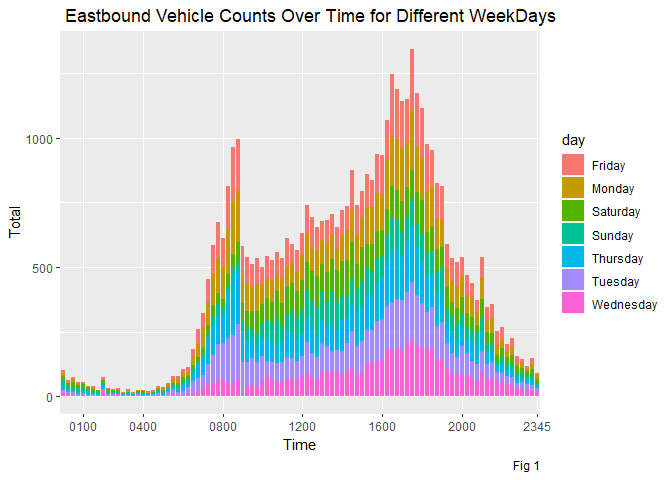
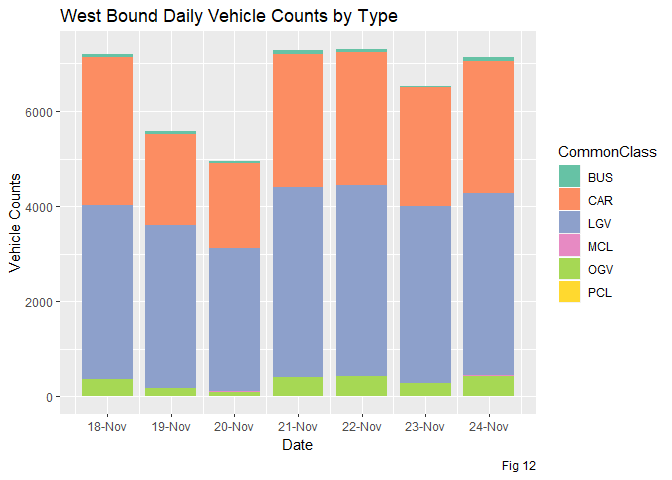
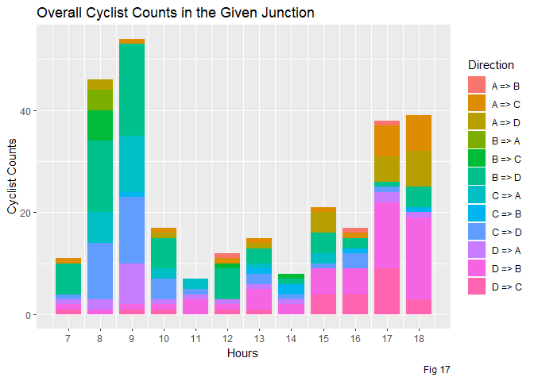

Traffic Data Analysis
Shubhajit Basak (#18231026)
24 March 2019
In this assignment we are studying the Real Traffic Data on the N59 just before and at the junction outside the Insight building in the IDA Business park in Dangan. Following figure showsthe exact location -
The main road through the junction is the N59. Traffic coming from direction B is from the (North Western) townlands around the N59 and the larger towns of Clifden, Oughterard and Moycullen.
- Traffic turning into A is going to the IDA Business Park, including the Data Science Institute (Insight)
- Traffic turning towards C can head toward the central part of the university campus and Galway city
- Traffic heading towards D can enter the northern part of the university campus at Corrib village. This traffic also goes to the city
As the excel proided is difficult to parse I have manually created an excel with the same data with four Tabs -
- EastBound - contaning the EastBound Vehicle Data as shown below -

- WestBound - contaning the WestBound Vehicle Data as shown below -
- Vehicle Type - To get the vehicle Class type -
- I have considered all the Other Goods Vehicle with in single category as OGV and all the different types of Buses as Bus
- Turning Data - As Shown below -
Part I - Determine the Period of Traffic Congestion
To get an idea of the period of traffic congestion at the junction I am considering the number of vehicle counts in both East and West Bound traffic and visualising the same -
suppressMessages(require(readxl))
suppressMessages(require(ggplot2))
suppressMessages(require(dplyr))
suppressMessages(require(stringi))
suppressMessages(require(lubridate))
suppressMessages(require(tidyr))
suppressMessages(require(RColorBrewer))
suppressMessages(require(ggridges))Read the data -
setwd("D:/Ratul/MyGit/Data-Visualisation/TrafficDataAnalysis")
my_data_eastbound <- read_excel("Data_Preprocess.xlsx",sheet = 1)
my_data_westbound <- read_excel("Data_Preprocess.xlsx",sheet = 2)#Extract Day of Week
dow <- function(x) format(as.Date(x), "%A")
#Get the Day of Week in both the data
my_data_eastbound$day <- dow(my_data_eastbound$Day)
my_data_westbound$day <- dow(my_data_westbound$Day)Lets plot a simple line graph for different days of week -
ggplot(data = my_data_eastbound, aes(x=Time, y = Total, fill=day))+
geom_bar(stat = "identity", width=0.8) +
scale_x_discrete(breaks=c('0100','0400','0800','1200','1600','2000','2345')) +
ggtitle(" Eastbound Vehicle Counts Over Time for Different WeekDays") +
labs(caption = "Fig 1")
ggplot(data = my_data_westbound, aes(x=Time, y = Total, fill=day))+
geom_bar(stat = "identity", width=0.8) +
scale_x_discrete(breaks=c('0100','0400','0800','1200','1600','2000','2345')) +
ggtitle(" WestBound Vehicle Counts Over Time for Different WeekDays") +
labs(caption = "Fig 2")
Observation:
- We can see there is definitive spikes during 7-8 AM early morning and 4-6 PM evening in both the direction
- The Count is comparatively low in weekend
- There is a spike in Wednesday in Morning for West Bound Traffic, one reason mat be normally transporters ans suppliers delivers their assignments on Wednesday
Though the graph gives some idea about the peak hours its bit difficult to interpret for individual day, lets try to facet the data by day and get an overall count of traffics in both the way.
Prepare the data for East Bound Traffic -
my_data_eastbound_upd <- my_data_eastbound %>% select (Day,day,Time,Total,`Cls-1`:`Cls-11`)
# Create Date Time Stamp
stri_sub(my_data_eastbound_upd$Time, 3, 2) <- ":"
my_data_eastbound_upd$DayTime <- ymd_hm(paste(as.character(my_data_eastbound_upd$Day),
my_data_eastbound_upd$Time))
# Extract Date
my_data_eastbound_upd$Date <- date(my_data_eastbound_upd$DayTime)
# Organise the columns
my_data_eastbound_upd <- my_data_eastbound_upd %>% select(DayTime,Date,day,Total,`Cls-1`:`Cls-11`)
# Get Hourly Sum
my_data_eastbound_upd.hour.sum <- aggregate(my_data_eastbound_upd["Total"],
list(DateTime = cut(my_data_eastbound_upd$DayTime, breaks="hour")),
sum, na.rm = TRUE)
# Get Date
my_data_eastbound_upd.hour.sum$Date <- date(my_data_eastbound_upd.hour.sum$DateTime)
# Get the Hour of the Day
my_data_eastbound_upd.hour.sum$Time <- hour(my_data_eastbound_upd.hour.sum$DateTime)
# Get the WeekDay
my_data_eastbound_upd.hour.sum$Day <- dow(my_data_eastbound_upd.hour.sum$DateTime)
# Add AM PM to separate the data into two half
my_data_eastbound_upd.hour.sum$AMPM[my_data_eastbound_upd.hour.sum$Time >= 0 & my_data_eastbound_upd.hour.sum$Time < 12]<-"AM"
my_data_eastbound_upd.hour.sum$AMPM[my_data_eastbound_upd.hour.sum$Time >= 12 ]<-"PM"
my_data_eastbound_upd.hour.sum$AMPM <-factor(my_data_eastbound_upd.hour.sum$AMPM, levels=c("AM","PM"))
#replace 12 pm with 11.99 am
new.rows<-my_data_eastbound_upd.hour.sum[my_data_eastbound_upd.hour.sum$Time == 12, ]
new.rows$AMPM <- "AM"
new.rows$Time <- 11.9999
my_data_eastbound_upd.hour.sum.newrows <- rbind(my_data_eastbound_upd.hour.sum, new.rows)Prepare the data for West Bound Traffic -
my_data_westbound_upd <- my_data_westbound %>% select (Day,day,Time,Total,`Cls-1`:`Cls-11`)
# Create Date Time Stamp
stri_sub(my_data_westbound_upd$Time, 3, 2) <- ":"
my_data_westbound_upd$DayTime <- ymd_hm(paste(as.character(my_data_westbound_upd$Day),
my_data_westbound_upd$Time))
# Extract Date
my_data_westbound_upd$Date <- date(my_data_westbound_upd$DayTime)
# Organise the columns
my_data_westbound_upd <- my_data_westbound_upd %>% select(DayTime,Date,day,Total,`Cls-1`:`Cls-11`)
# Get Hourly Sum
my_data_westbound_upd.hour.sum <- aggregate(my_data_westbound_upd["Total"],
list(DateTime = cut(my_data_westbound_upd$DayTime, breaks="hour")),
sum, na.rm = TRUE)
# Get Date
my_data_westbound_upd.hour.sum$Date <- date(my_data_westbound_upd.hour.sum$DateTime)
# Get the Hour of the Day
my_data_westbound_upd.hour.sum$Time <- hour(my_data_westbound_upd.hour.sum$DateTime)
# Get the WeekDay
my_data_westbound_upd.hour.sum$Day <- dow(my_data_westbound_upd.hour.sum$DateTime)
# Add AM PM to separate the data into two half
my_data_westbound_upd.hour.sum$AMPM[my_data_westbound_upd.hour.sum$Time >= 0 & my_data_westbound_upd.hour.sum$Time < 12]<-"AM"
my_data_westbound_upd.hour.sum$AMPM[my_data_westbound_upd.hour.sum$Time >= 12 ]<-"PM"
my_data_westbound_upd.hour.sum$AMPM <-factor(my_data_westbound_upd.hour.sum$AMPM, levels=c("AM","PM"))
#replace 12 pm with 11.99 am
new.rows<-my_data_westbound_upd.hour.sum[my_data_westbound_upd.hour.sum$Time == 12, ]
new.rows$AMPM <- "AM"
new.rows$Time <- 11.9999
my_data_westbound_upd.hour.sum.newrows <- rbind(my_data_westbound_upd.hour.sum, new.rows)Plot The data -
p <- ggplot(my_data_eastbound_upd.hour.sum.newrows, aes(x = Time,fill=AMPM )) +
geom_ridgeline(aes(height = Total, y=0), size=0.2, alpha=0.7) +
scale_x_continuous(breaks=c(0,4,8,12,16,20))+
scale_y_continuous(name ="VehicleCounts")+ #breaks=c(0,50,100,150,200,250),
geom_vline(aes(xintercept = 7),linetype="dotted", colour = 'red', size = 0.2 ) +
geom_vline(aes(xintercept = 17),linetype="dotted", colour = 'red', size = 0.2 ) +
geom_text(label="7 AM", x=7, y=800, hjust=-0.2, size=2) + # title of left line
geom_text(label="5 PM", x=17, y=800, hjust=-0.2, size=2) + # title of right line
scale_fill_manual(values=c("goldenrod1","cornflowerblue"), name="ampm")+
#faceted grid view
facet_grid(. ~ Day, switch = "x") +
theme(axis.title.x=element_blank(),
axis.text.x = element_text(size = 5.5,vjust=6),
axis.ticks.x = element_blank(),
panel.grid =element_blank(),
panel.background = element_blank(),
legend.title = element_blank(),
strip.placement = "outside",
strip.text.x = element_text(size=6)
) +
ggtitle("Eastbound Vehicle Counts Over Time for Different WeekDays") +
labs(caption = "Fig 3")
pp <- ggplot(my_data_westbound_upd.hour.sum.newrows, aes(x = Time,fill=AMPM )) +
geom_ridgeline(aes(height = Total, y=0), size=0.2, alpha=0.7) +
scale_x_continuous(breaks=c(0,4,8,12,16,20))+
scale_y_continuous(name ="VehicleCounts")+ #breaks=c(0,50,100,150,200,250),
geom_vline(aes(xintercept = 7),linetype="dotted", colour = 'red', size = 0.2 ) +
geom_vline(aes(xintercept = 17),linetype="dotted", colour = 'red', size = 0.2 ) +
geom_text(label="7 AM", x=7, y=800, hjust=-0.2, size=2) + # title of left line
geom_text(label="5 PM", x=17, y=800, hjust=-0.2, size=2) + # title of right line
scale_fill_manual(values=c("goldenrod1","cornflowerblue"), name="ampm")+
#faceted grid view
facet_grid(. ~ Day, switch = "x") +
theme(axis.title.x=element_blank(),
axis.text.x = element_text(size = 5.5,vjust=6),
axis.ticks.x = element_blank(),
panel.grid =element_blank(),
panel.background = element_blank(),
legend.title = element_blank(),
strip.placement = "outside",
strip.text.x = element_text(size=6)
) +
ggtitle("Westbound Vehicle Counts Over Time for Different WeekDays") +
labs(caption = "Fig 4")
p
Observations:
- The above plot Fig 3 & 4 shows the same characteristics as Fig 1 & 2
- The major Traffic in both the direction is around 7-8 AM in the Morning and 4-6 PM in the Evening
- The spike in Wednesday Towards Moycullen is because of the high density of Van and Goods Vehicle may be because of in Wednesday retailers delivers their packages
Part II - Distribution Of Vehicle Types Contributing to Daily Traffic
Read the data to Get the Vehicle Types
veh_type_veh_count_data <- read_excel("Data_Preprocess.xlsx",sheet = 3)
veh_type_veh_count_data$VehType <- stri_c("Cls",as.character(veh_type_veh_count_data$Class))
veh_type_veh_count_data## # A tibble: 11 x 5
## Class Description `Class in Junction Turning data` CommonClass VehType
## <dbl> <chr> <chr> <chr> <chr>
## 1 1 Cyclist PCL PCL Cls1
## 2 2 M/Cycle MCL MCL Cls2
## 3 3 Car Car,Taxi CAR Cls3
## 4 4 Van LGV LGV Cls4
## 5 5 Rigid 2 Axle OGV1 OGV Cls5
## 6 6 Rigid 3 Axle OGV1 OGV Cls6
## 7 7 Rigid 4 Axle OGV2 OGV Cls7
## 8 8 3 Axle HGv OGV3 OGV Cls8
## 9 9 4 Axle HGV OGV4 OGV Cls9
## 10 10 5+Axle HGV OGV5 OGV Cls10
## 11 11 Bus CDB, BEB, OB BUS Cls11Visualise East Bound Data
# Summarise after Group by Date
my_data_eastbound_upd.Veh.Sum <- my_data_eastbound_upd %>% group_by(Date) %>%
summarise(Cls1 = sum(`Cls-1`),
Cls2 = sum(`Cls-2`),
Cls3 = sum(`Cls-3`),
Cls4 = sum(`Cls-4`),
Cls5 = sum(`Cls-5`),
Cls6 = sum(`Cls-6`),
Cls7 = sum(`Cls-7`),
Cls8 = sum(`Cls-8`),
Cls9 = sum(`Cls-9`),
Cls10 = sum(`Cls-10`),
Cls11 = sum(`Cls-11`)
)
# Convert to Tall Format
my_data_eastbound_upd.Veh.Sum.Tall <- gather(my_data_eastbound_upd.Veh.Sum, "VehType", "Counts",Cls1:Cls11)
my_data_eastbound_upd.Veh.Sum.Tall <- merge(my_data_eastbound_upd.Veh.Sum.Tall,veh_type_veh_count_data) %>% select(Date, Description,Counts)
getPalette = brewer.pal(11, "Set3")
ggplot(my_data_eastbound_upd.Veh.Sum.Tall, aes(x = Date,
y=Counts, fill=Description
)) +
geom_bar(stat="identity", width=0.8) +
scale_y_continuous(name = "Vehicle Counts") +
scale_x_date(date_labels = "%d-%b", breaks = as.Date(c("2016-11-18","2016-11-19","2016-11-20",
"2016-11-21","2016-11-22","2016-11-23","2016-11-24"))) +
scale_fill_manual(values=getPalette) +
ggtitle("East Bound Daily Vehicle Counts by Type ") +
labs(caption = "Fig 7")
ggplot(data = my_data_eastbound_upd.Veh.Sum.Tall, aes(x = Date,
y=Counts, color = Description,
group = Description)) +
geom_point(aes(shape = Description)) +
geom_line() +
scale_fill_manual(values=getPalette) +
scale_shape_manual(values = c(1,2,3,4,5,6,7,8,9,10,11)) +
scale_x_date(date_labels = "%d-%b", breaks = as.Date(c("2016-11-18","2016-11-19","2016-11-20",
"2016-11-21","2016-11-22","2016-11-23","2016-11-24"))) +
scale_y_continuous(name = "Vehicle Counts") +
ggtitle("East Bound Daily Vehicle Counts by Type ") +
labs(caption = "Fig 8")
Observations:
- We have found the major contributions are from the Van and Car and a little number of 2 Axle Vehicle
As we have found the other vehicles are not contributing so much in the count I am merging the vehicle type as six categories -
- CAR - Includes Car and Taxi
- BUS - Includes all kind of Bus(CDB, BEB and OB)
- LGV - Include Van
- MCL - M/Cycle
- OGV - Includes 2 Axle, 3 Axle, 4 Axle and 5+ Axle
- PCL - Cyclists
Merge the data -
my_data_eastbound_upd.Veh.Sum.Tall.Updt <- merge(my_data_eastbound_upd.Veh.Sum.Tall,veh_type_veh_count_data) %>%
select(Date,CommonClass,Counts) %>%
group_by(Date,CommonClass) %>%
summarise(Counts = sum(Counts))
head(my_data_eastbound_upd.Veh.Sum.Tall.Updt)## # A tibble: 6 x 3
## # Groups: Date [1]
## Date CommonClass Counts
## <date> <chr> <dbl>
## 1 2016-11-18 BUS 78
## 2 2016-11-18 CAR 3326
## 3 2016-11-18 LGV 3562
## 4 2016-11-18 MCL 12
## 5 2016-11-18 OGV 320
## 6 2016-11-18 PCL 3ggplot(my_data_eastbound_upd.Veh.Sum.Tall.Updt, aes(x = Date,
y=Counts, fill=CommonClass
)) +
geom_bar(stat="identity", width=0.8) +
scale_y_continuous(name = "Vehicle Counts") +
scale_fill_manual(values=brewer.pal(6, "Set2")) +
scale_x_date(date_labels = "%d-%b", breaks = as.Date(c("2016-11-18","2016-11-19","2016-11-20",
"2016-11-21","2016-11-22","2016-11-23","2016-11-24"))) +
# scale_fill_manual(values=getPalette) +
ggtitle("East Bound Daily Vehicle Counts by Type ") +
labs(caption = "Fig 9")
Observations -
- The major contributors are Car and LGV/Vans
- Other than there are few numbers of OGV vehicles
Repeat the same procedure for West Bound Vehicles -
my_data_westbound_upd.Veh.Sum <- my_data_westbound_upd %>% group_by(Date) %>%
summarise(Cls1 = sum(`Cls-1`),
Cls2 = sum(`Cls-2`),
Cls3 = sum(`Cls-3`),
Cls4 = sum(`Cls-4`),
Cls5 = sum(`Cls-5`),
Cls6 = sum(`Cls-6`),
Cls7 = sum(`Cls-7`),
Cls8 = sum(`Cls-8`),
Cls9 = sum(`Cls-9`),
Cls10 = sum(`Cls-10`),
Cls11 = sum(`Cls-11`)
)
my_data_westbound_upd.Veh.Sum.Tall <- gather(my_data_westbound_upd.Veh.Sum, "VehType", "Counts",Cls1:Cls11)
my_data_westbound_upd.Veh.Sum.Tall <- merge(my_data_westbound_upd.Veh.Sum.Tall,veh_type_veh_count_data) %>% select(Date, Description,Counts)
getPalette = brewer.pal(11, "Set3")
ggplot(my_data_westbound_upd.Veh.Sum.Tall, aes(x = Date,
y=Counts, fill=Description
)) +
geom_bar(stat="identity", width=0.8) +
scale_y_continuous(name = "Vehicle Counts") +
scale_x_date(date_labels = "%d-%b", breaks = as.Date(c("2016-11-18","2016-11-19","2016-11-20",
"2016-11-21","2016-11-22","2016-11-23","2016-11-24"))) +
scale_fill_manual(values=getPalette) +
ggtitle("West Bound Daily Vehicle Counts by Type ") +
labs(caption = "Fig 10")
ggplot(data = my_data_westbound_upd.Veh.Sum.Tall, aes(x = Date,
y=Counts, color = Description,
group = Description)) +
geom_point(aes(shape = Description)) +
geom_line() +
scale_fill_manual(values=getPalette) +
scale_shape_manual(values = c(1,2,3,4,5,6,7,8,9,10,11)) +
scale_x_date(date_labels = "%d-%b", breaks = as.Date(c("2016-11-18","2016-11-19","2016-11-20",
"2016-11-21","2016-11-22","2016-11-23","2016-11-24"))) +
scale_y_continuous(name = "Vehicle Counts") +
ggtitle("West Bound Daily Vehicle Counts by Type ") +
labs(caption = "Fig 11")my_data_westbound_upd.Veh.Sum.Tall.Updt <- merge(my_data_westbound_upd.Veh.Sum.Tall,veh_type_veh_count_data) %>%
select(Date,CommonClass,Counts) %>%
group_by(Date,CommonClass) %>%
summarise(Counts = sum(Counts))
head(my_data_westbound_upd.Veh.Sum.Tall.Updt)## # A tibble: 6 x 3
## # Groups: Date [1]
## Date CommonClass Counts
## <date> <chr> <dbl>
## 1 2016-11-18 BUS 79
## 2 2016-11-18 CAR 3105
## 3 2016-11-18 LGV 3652
## 4 2016-11-18 MCL 16
## 5 2016-11-18 OGV 350
## 6 2016-11-18 PCL 5ggplot(my_data_westbound_upd.Veh.Sum.Tall.Updt, aes(x = Date,
y=Counts, fill=CommonClass
)) +
geom_bar(stat="identity", width=0.8) +
scale_y_continuous(name = "Vehicle Counts") +
scale_fill_manual(values=brewer.pal(6, "Set2")) +
scale_x_date(date_labels = "%d-%b", breaks = as.Date(c("2016-11-18","2016-11-19","2016-11-20",
"2016-11-21","2016-11-22","2016-11-23","2016-11-24"))) +
ggtitle("West Bound Daily Vehicle Counts by Type ") +
labs(caption = "Fig 12")
Observations -
- The West bound data also shows the same trend as East bound
- The major contributors are Car and LGV/Vans
- Other than there are few numbers of OGV vehicles
Part III - Case supporting a regular bus service from Moycullen to the IDA park and the university
First I will read the data provided which have the statistics of vehicles taking turns in the junction shown in the map at the start of this report.
While merging the data I am considering Taxi and Car as single type, OGV1 and OGV2 as single type OGV
turning_data <- read_excel("Data_Preprocess.xlsx",sheet = 4)
# Get header data
turning_header<-c("Direction", "DateTime",as.vector(unname(unlist(turning_data[1,2:11]))))
# Create a blank dataframe
mydata_turning <- as.data.frame(matrix(,ncol=12,nrow=0))
# As the data is spreaded over the different direction I will convert it into tall form for all the directions
n <- 2
while(n <= 112){
tempdf <- slice(turning_data,2:n()) %>% select(1,n:(n+9))
tempdf <- cbind(Direction=stri_sub(colnames(tempdf)[2],0,6),tempdf)
colnames(mydata_turning)<- turning_header
tempdf <- unname(tempdf)
colnames(tempdf)<- turning_header
mydata_turning <- rbind(mydata_turning, tempdf)
n <- n+10
}
mydata_turning$Direction <- as.character(mydata_turning$Direction)
mydata_turning[,3:12] = apply(mydata_turning[,3:12], 2, function(x) as.numeric(as.character(x)));
mydata_turning <- mydata_turning %>% mutate(Hour = hour(DateTime))
# Summarise the vehicle counts
mydata_turning_hourly <- mydata_turning %>% group_by(Direction,Hour) %>%
summarise(
PCL = sum(PCL),
MCL = sum(MCL),
CAR = sum(CAR)+ sum(TAXI),
LGV = sum(LGV),
OGV = sum(OGV1)+sum(OGV2),
CITYBUS = sum(CDB),
EIREANNBUS = sum(BEB),
OTHERBUS = sum(OB)
)
head(mydata_turning_hourly)## # A tibble: 6 x 10
## # Groups: Direction [1]
## Direction Hour PCL MCL CAR LGV OGV CITYBUS EIREANNBUS OTHERBUS
## <chr> <int> <dbl> <dbl> <dbl> <dbl> <dbl> <dbl> <dbl> <dbl>
## 1 A => B 7 0 0 0 0 0 0 0 0
## 2 A => B 8 0 0 1 0 0 0 0 0
## 3 A => B 9 0 0 3 1 0 0 0 0
## 4 A => B 10 0 0 1 1 0 0 0 0
## 5 A => B 11 0 0 4 1 0 0 0 0
## 6 A => B 12 1 0 15 4 1 0 0 0As the data consists of several direction I have created two categories as below -
- Vehicles From Moycullen to DERI/University/City - as per the map view vehicles coming from B -> D, B -> C and B -> A
- Vehicles From DERI/University/City to Moycullen - as per the map view vehicles coming from A -> B, C -> B and D -> B
mydata_turning_hourly_fromMoycullen <- mydata_turning_hourly %>%
filter( Direction == "B => D" || Direction == "B => C" || Direction == "B => A" )
mydata_turning_hourly_toMoycullen <- mydata_turning_hourly %>%
filter( Direction == "A => B" || Direction == "C => B" || Direction == "D => B" )
print("Total Vehicles From Moycullen - ")## [1] "Total Vehicles From Moycullen - "print(colSums(Filter(is.numeric,mydata_turning_hourly_fromMoycullen)))## Hour PCL MCL CAR LGV OGV
## 450 77 2 5520 756 206
## CITYBUS EIREANNBUS OTHERBUS
## 0 5 27print("Total Vehicles Towards Moycullen - ")## [1] "Total Vehicles Towards Moycullen - "print(colSums(Filter(is.numeric,mydata_turning_hourly_toMoycullen)))## Hour PCL MCL CAR LGV OGV
## 450 62 4 5062 662 188
## CITYBUS EIREANNBUS OTHERBUS
## 0 5 22Observations:
- Seeing the above data counts its clear that there are high volume of Cars (around 5k daily) coming from Moycullen and going opposite direction
- On the contrary there is no City Bus Service in the root
- So if we assume atleast one fourth of the people coming by Car of Other Bus Types will be replaced by the bus service, around 1025 cars and 5 Other Bus can be take off the road
Lets try to find out the peak times when the volume of cars are maximum -
ggplot(data = mydata_turning_hourly_fromMoycullen, aes(x=Hour, y= CAR, fill=Direction))+
geom_bar(stat = "identity", width=0.8) +
scale_x_continuous(breaks = c(7,8,9,10,11,12,13,14,15,16,17,18))+
xlab("Hours")+
ylab("Car Counts")+
ggtitle("Total Car Counts From Moycullen to City/University") +
labs(caption = "Fig 13")
ggplot(data = mydata_turning_hourly_toMoycullen, aes(x=Hour, y= CAR, fill=Direction))+
geom_bar(stat = "identity", width=0.8) +
scale_x_continuous(breaks = c(7,8,9,10,11,12,13,14,15,16,17,18))+
xlab("Hours")+
ylab("Car Counts")+
ggtitle("Total Car Counts From City/University to Moycullen") +
labs(caption = "Fig 14")Observation:
- From the above graph we can see for the Cars coming from Moycullen the pick hours are 7-9 am and at around 1-3 PM
- For the Cars going towards Moycullen the pick hours are between 4 pm and 6 pm
As per the observation we canproposed the following Bus Route -
| Route | Timings | Frequencies |
|---|---|---|
| Moycullen to Galway City Centre through NUIG | 7 AM - 10 AM | Every 20 Minutes |
| -Do- | Rest of the Day | Every 1 Hour |
| Galway City Centre to Moycullen through NUIG | 4 PM - 7 PM | Every 20 Minutes |
| -Do- | Rest of the Day | Every 1 Hour |
Part IV - Case Supporting a greenway cycle path from Moycullen to Galway via NUIG
print("Total Vehicle Counts - ")## [1] "Total Vehicle Counts - "print(colSums(Filter(is.numeric,mydata_turning_hourly)))## Hour PCL MCL CAR LGV OGV
## 1800 285 7 12905 1602 411
## CITYBUS EIREANNBUS OTHERBUS
## 5 32 50print("Total Vehicle Counts From Moycullen - ")## [1] "Total Vehicle Counts From Moycullen - "print(colSums(Filter(is.numeric,mydata_turning_hourly_fromMoycullen)))## Hour PCL MCL CAR LGV OGV
## 450 77 2 5520 756 206
## CITYBUS EIREANNBUS OTHERBUS
## 0 5 27print("Total Vehicle Counts Towards Moycullen - ")## [1] "Total Vehicle Counts Towards Moycullen - "print(colSums(Filter(is.numeric,mydata_turning_hourly_toMoycullen)))## Hour PCL MCL CAR LGV OGV
## 450 62 4 5062 662 188
## CITYBUS EIREANNBUS OTHERBUS
## 0 5 22Observation
- So from the above data its clear that the Moycullen Route is the major contributor of the total cyclists count
Lets try to support this fact through visualization -
ggplot(data = mydata_turning_hourly_fromMoycullen, aes(x=Hour, y= PCL, fill=Direction))+
geom_bar(stat = "identity", width=0.8) +
scale_x_continuous(breaks = c(7,8,9,10,11,12,13,14,15,16,17,18))+
xlab("Hours")+
ylab("Cyclist Counts")+
ggtitle("Total Cyclist Counts From Moycullen to City/University") +
labs(caption = "Fig 15")
ggplot(data = mydata_turning_hourly_toMoycullen, aes(x=Hour, y= PCL, fill=Direction))+
geom_bar(stat = "identity", width=0.8) +
scale_x_continuous(breaks = c(7,8,9,10,11,12,13,14,15,16,17,18))+
xlab("Hours")+
ylab("Cyclist Counts")+
ggtitle("Total Cyclist Counts From City/University to Moycullen") +
labs(caption = "Fig 16")ggplot(data = mydata_turning_hourly , aes(x=Hour, y= PCL, fill=Direction))+
geom_bar(stat = "identity", width=0.8) +
scale_x_continuous(breaks = c(7,8,9,10,11,12,13,14,15,16,17,18))+
xlab("Hours")+
ylab("Cyclist Counts")+
ggtitle("Overall Cyclist Counts in the Given Junction") +
labs(caption = "Fig 17")
Observations -
- From both the Fig 15 and Fig 16 we can see the Major contributor of the cycles coming to and from Moycullen are those coming towards NUIG
- From Fig 17 its more evident that if we consider the total number of cyclists in the junction then also the major portions are B->D or D->B i.e. - cyclists coming to or from Moycullen and NUIG
- So these supports for a Green Cycle Path Between Moycullen and NUIG
- Also this may reduce the Bus counts as shown under Other Bus category
Conclusion -
So we have seen overall the traffic congestion is high during 7-9 am in the morning and 4-6 pm in the evening, which needs to be addressed. Alsowe have found though there are lots of commutators coming from Moycullen there is a very less amount of Eireann Bus and no City Bus in this route. So starting new bus service will definitly reduce the traffic in this route.